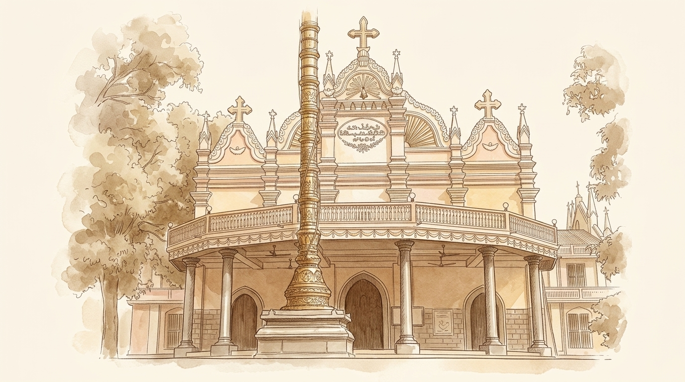
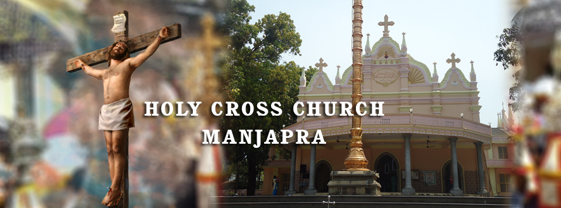
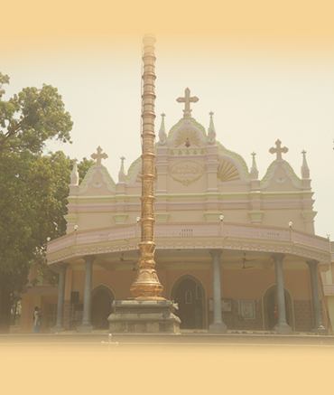

Fr. Varghese Pottackal
Parish Vicar
Manjapra

It gives me immense joy to inaugurate a website for Holy Cross Forane Church, Manjapra in order to widen the horizon of relationships even outside the territory of parish. Among 7000 of parishioners, thousands of people are residing outside the territory of our parish for various reasons. Hundreds of parishioners are in aboard. And in this contest, this new venture not only disseminate the liturgical events and happenings to every nook and corner of the world, but also continue to serve as a web among the parishioners to know, love and care for each other like the early Christian community. My hearty congratulations to all those who worked hard to make this dream come true!
With my prayerful wishes and blessings,
Manjapra has a vital role in kerala, the cradle of Christians . Mar Sleeva forane church is situated in manjapra a place near malayattoor which is famous for St.thomas foot steps and kalady a place where adishankara was born. The area where manjapra church is situated was earlier known as manjapra and latter abbreviated as manjapra.
According to the records, there had been no sign of church I manjapra till the 14th century. The Catholics here depended more on Angamaly church for all their spiritual needs. Being far from the location, the people faced difficulties in depending angamaly church for baptism and funeral and this accelerated the instinct in the people to build a church in manjapra.
The Christians submitted the entreaty to the government continuously. As a result the king of paravoor permitted 56 cents of land for building church and kuttadans field too was given for a chapel. Thus a catholic church was formed for the first time I they allotted place in the year 1401. From the Paravoor King’s property itself the surrounding areas were made tax free. The documents had been kept safe in church but were lost. It is said that at the commencement of the church, there were only 45 Christian families in Manjapra .In 1865 the church was renovated. Along with that father’s banglaw, the boundary walls, graveyard and the crosses were built. But the father’s banglaw we have now was formed in 1912 by the vicar, Rev. Fr. Mundadan B Tharial (Angamaly). When the number of parishioners increased, there was insufficient space in the church.
In 1940, Fr. Joseph Pynadath stated the work of madbaha and mondalam in the south. Rev. Fr. Kuriakose Kandathil completed the work. Later Manjapra Parish was divided into different Churches- Kottamam (1799), Naduvattom (1939) and Anappara (1950) which afterwards became Parishes. St. Joseph’s church Amalapuram(1959), St. Thomas church, Thattupara(1925), St. Sebastian’s church Marygiti(1960), Our Lady’s church Anappara(1964), St. Sebastian’s church Chully (1970), were all manjapra’s chapels. On May 18th, 1986 Mar Sleeva Church Manjapra was raised to a Forane and all these parishes came under Manjapra Forane.
The work of the parish hall was completed by Rev. Fr. Jose Nettikadan, the vicar (1987-1991). On 12th January, 1991 His Excellency Cardinal Antony Padiyara blessed the Parish hall. The first face of cemetery was completed by Rev. Fr. Joseph Bharanikulangara. On February 6th, 1999 Rev. Fr. Paul S Payyapilly took the charge as Vicar. That was the golden period of Development. The church was then renovated under the leadership of Rev Fr Paul S Payyapilly and Asst Vicars, Fr. Joy Plackal, Fr. Paul Kottackal and the renovation committee under K J Baby Kolattukudy as convener eliciting its dignity and unchanging its heritage. On 21st January, 2001 Major Arch Bishop Mar Varkey Vithayathil blessed the new Church. Hence for the second face of the cemetery work too was completed. On November 2, 2002, the new cemetery and chapel were blessed.

From 19th to 28th november celebrating the feast of St.mary.On December 24th there will be a christmas tree competition.
